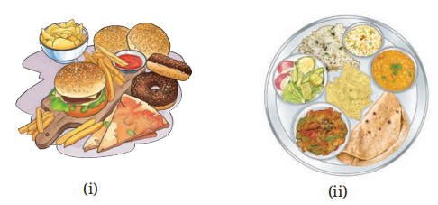

SCIENCE CLASS- 7
CHAPTER-6 (Adolescence – A Stage of Growth and Change)
Let Us Enhance Our Learning
1. Ramesh, an 11-year-old boy, developed a few pimples on his face.
(i) What could be the possible reasons for the development of these pimples on his face?
During adolescence, hormonal changes increase the activity of oil glands in the skin. Excess oil can block skin pores and lead to infections, causing pimples or acne.
(ii) What can he do to get some relief from these pimples?
He should keep his face clean by washing it regularly with clean water, avoid touching or squeezing pimples, eat a balanced diet, and maintain good personal hygiene.
2. Which of the following food groups would be a better option for adolescents and why?

Image Source- NCERT
Answer: Food group (ii) is a better option.
It contains a balanced diet with cereals, pulses, vegetables, fruits, and other nutritious foods. Adolescents need proteins, carbohydrates, vitamins, minerals, and fats for proper growth and development. Food group (i) mainly contains junk food, which may not provide adequate nutrition.
3. Unscramble the underlined words.
(i) nstmnoiaretu → Menstruation
(ii) iceov xob → Voice Box
(iii) urtypeb → Puberty
(iv) lahoclo and srugd → Alcohol and Drugs
4. Shalu told her friend, “Adolescence brings only physical changes, like growing taller or developing body hair.” Is she correct?
Answer:
No, Shalu is not correct. Adolescence involves not only physical changes but also emotional, behavioural, and biological changes. Adolescents may experience mood swings, increased sensitivity, changes in thinking, and the development of reproductive capability. Therefore, adolescence is a period of overall growth and development.
5. During a discussion in the class, some students raised the following points. What questions would you ask them to check the correctness of these points?
(i) Adolescents do not need to worry about behavioural changes.
Questions:
- Can behavioural changes affect relationships with family and friends?
- Can mood swings influence decision-making?
- Should adolescents learn to manage their emotions responsibly?
(ii) If someone tries a harmful substance once, they can stop anytime they want.
Questions:
- Can harmful substances become addictive?
- Do many addictions begin with just one trial?
- Can addiction affect health and future life?
6. Adolescents sometimes experience mood swings. What other behavioural changes are associated with this age?
Answer:
Other behavioural changes during adolescence include increased sensitivity, stronger emotions, curiosity, self-exploration, creativity, desire for independence, greater interest in friendships, and participation in social activities. Adolescents may also develop new interests and become more aware of their surroundings.
7. What menstrual hygiene and sanitary habits would you suggest to your friends?
Answer:
- Use clean sanitary pads or reusable cloth pads.
- Change pads regularly.
- Maintain personal hygiene during menstruation.
- Wash hands before and after changing pads.
- Wrap used sanitary pads in paper before disposing of them in a dustbin.
- Keep toilets and surroundings clean.
- Do not feel ashamed because menstruation is a natural process.
8. Why did the doctor advise Mary and Manoj differently?
Answer:
Mary's neck bulge may have been caused by an iodine deficiency, which can lead to enlargement of the thyroid gland (goitre). Therefore, the doctor advised her to take iodine-rich food and medicines.
In Manoj's case, the bump on the front of the neck was likely the Adam's apple, which develops naturally during adolescence due to the growth of the voice box in boys. Hence, no treatment was required.
9. Categorise the following physical changes during adolescence.
| Observed Only in Boys | Observed Only in Girls | Common in Boys and Girls |
|---|---|---|
| Change in voice | Development of breasts | Pimples on the face |
| Growth of moustache | Growth of hair in the pubic region | |
| Growth of facial hair | Growth of hair in armpits |
10. Prepare a poster mentioning the tips for adolescents to live a healthy lifestyle.
HEALTHY ADOLESCENCE – HEALTHY FUTURE
- Eat a balanced and nutritious diet.
- Drink plenty of clean water.
- Exercise regularly and play outdoor games.
- Maintain personal hygiene.
- Get adequate sleep every day.
- Manage emotions positively.
- Use social media responsibly.
- Respect others and build healthy relationships.
- Say NO to tobacco, alcohol, drugs, and other harmful substances.
- Seek guidance from parents, teachers, and trusted adults whenever needed.
Stay Healthy • Stay Active • Stay Positive